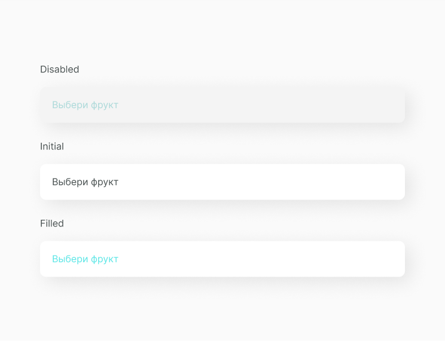

Select Input
Тег <select> (от англ. select — выбрать) позволяет создать элемент интерфейса в виде раскрывающегося списка, а также список с одним или множественным выбором.
В основном селект инпут используют в различных формах входа или заполнения данных, когда нужно сделать единичный выбор из выпадающего листа опций.
Структура компонента
Select input состоит из поля input с атрибутом placeholder, option list и, в зависимости от функционала, иконки chevrone, которая анимируется во время пользовательского действия. Этот пример не содержит chevrone, так как option list открывается при нажатии на input.
Placeholder
Текст placeholder обычно имеет более светлую расцветку и содержит информацию о том, какие введённые данные будут допустимы, но при этом не является текущими введёнными данными.
Состояние компонента
Исходя из структуры, мы можем выявить несколько состояний компонента с данными и без них.
А также состояние инпута, кога открыт option list.
Реализация
Компонент должен принимать параметры: type (единичный или множественный тип), placeholder, current selection, option list, handleChange (коллбек изменения поля).
import React, { PureComponent } from 'react'
import './A_Input.scss'
export default class A_Input extends PureComponent {
constructor(props) {
super(props)
}
render() {
const {
children,
onFocus,
onBlur,
placeholder,
disabled,
value,
onChange
} = this.props
return (
<div className="A_InputContainer">
{children}
{!disabled && (
<input
placeholder={placeholder}
className="A_Input"
onBlur={onBlur}
onFocus={onFocus}
onChange={this.handleChangeValue}
value={value}
/>
)}
</div>
)
}
}
Компонент должен принимать параметры: type (единичный или множественный тип), placeholder, current selection, option list, handleChange (коллбек изменения поля).
.O_Select {
width: 610px;
.C_OptionsList {
margin-top: -15px;
border-radius: 10px;
background-color: #f4f4f4;
padding: 40px 20px 20px 20px;
}
}Ссылки
Также для тебя ссылки на Фигму с дизайн системой и GitHub с библиотекой компонентов.
Составляющие
Этот компонент часто выводится в следующих компонентах
Этот компонент часто выводится в следующих компонентах